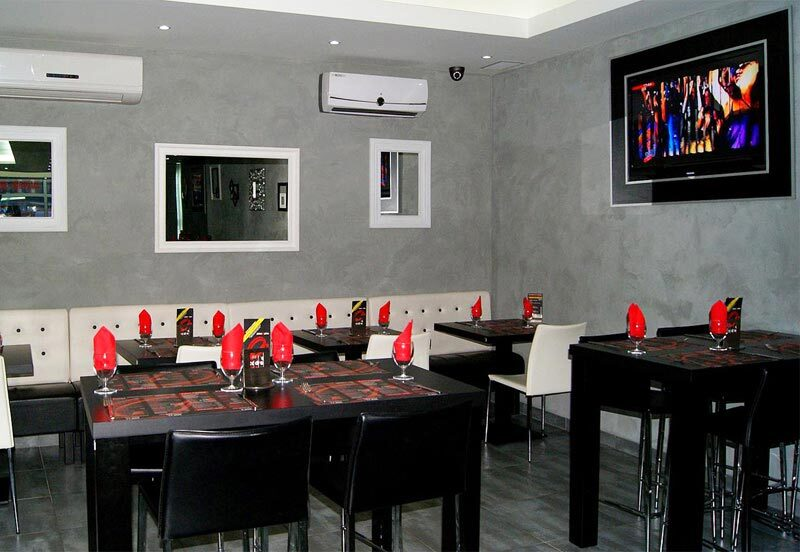

Bonsoir, on a mangé dimanche soir avec toute l'équipe, le repas était très bon et on reviendra manger chez vous. Un repas magnifique, venez manger au Cadre !Edmond C.

Vos avis
Votre satisfaction continuelle, notre devise
Laissez-nous un avis sur la qualité de nos produits, l'accueil et le service. Chaque message est lu par l'équipe.
Depuis notre retour sur Forbach, nous avons mangé toute une semaine, midi et soir chez eux. Propre, professionnel, et surtout toujours un mot gentil. Produits de très bonne qualité. Aujourd'hui, j'ai fait livrer : au top ! Félicitations à toute l'équipe.Claudia H.
On a essayé les pizzas ce soir (Quatre saisons et Dynamite) et pas déçus. Le seul bémol : la pâte un peu moins cuite qu'à mon goût. On reviendra, donc je recommande.Hélène F.
Parfait ! Toujours très bon !Emmanuelle G.
Fusilis saumon et câpres sur assiette… Un pur délice, à l'image de toute l'équipe. Bravo !Julien H.
Leurs pizzas sont tellement bonnes, franchement excellentes. À chaque fois je me régale et vraiment je recommande mille fois.Btissem D.
Ponctualité, efficacité et livreur sympathique et professionnel. Il s'agit du livreur de Forbach qui m'a livrée à Petite-Rosselle.Antoinette S.
La meilleure pizzeria du monde pour moi. Après avoir goûté la pizza Nutella Banane de Betting, j'ai essayé toutes les pizzas Nutella des pizzerias du coin. Aucune n'arrive à la cheville de celle du O'Cadre. Merci au créateur de cette pizza dessert.Aimé J.
Pizza toujours excellente.Cédric W.
Super service, délai de livraison respecté, pizza très très très bonne, vraiment une dinguerie… Bravo, je recommande à 100 000 %.Aïcha
Toujours très satisfait, aussi bien de la pizza que de la livraison, toujours bien chaude, timing bien respecté en plus. Bravo à l'équipe !Olivier
Super pizza, trop bonne, délicieuse et très bien garnie, pâte croustillante et moelleuse à souhait. Bravo O'Cadre et toute son équipe.David Z.
Très bonne pizza et toujours à l'heure pour la livraison. Merci, très bonne équipe.Yves B.
Je commande souvent dans cette pizzeria et pas une seule déception. Aujourd'hui la flamm au poulet a été un véritable délice, je recommande de l'essayer à ceux qui n'y ont pas encore goûté.Benoît
Juste formidable pour la fête des mères : cuisine, service, prix, cadre superbe. À bientôt !Patrick G.
Délai parfait, livraison rapide et pizzas très bonnes.Véronique R.
Partagez votre expérience
Un message, une note, un avis
Produits, accueil, service, livraison : dites-nous tout, nous avons pour devise votre satisfaction continuelle.